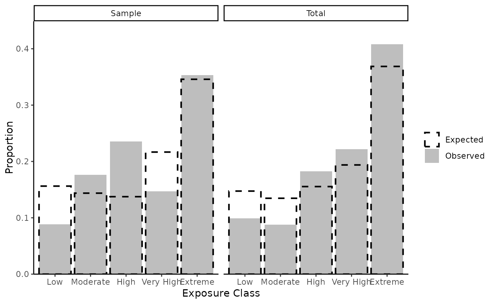

For advanced users. fire_exp_validate() compares the
proportion of exposure classes in a the study area to the proportion of
exposure classes within burned areas. A random sample is taken to account
for spatial autocorrelation.
Arguments
- burnableexposure
A SpatRaster of exposure, non-burnable cells should be removed using optional parameter in
fire_exp().- fires
A SpatVector of observed fire perimeters
- aoi
(Optional) A SpatVector that delineates an area of interest
- samplesize
Proportion of area to sample. The default is
0.005(0.5%)- plot
Boolean, when
TRUE: returns a plot of expected and observed exposure class proportions within entire extent and sampled areas. The default isFALSE.
Examples
# read example hazard data
hazard_file_path <- "extdata/hazard.tif"
hazard <- terra::rast(system.file(hazard_file_path, package = "fireexposuR"))
# generate example non-burnable cells data
geom_file_path <- "extdata/polygon_geometry.csv"
geom <- read.csv(system.file(geom_file_path, package = "fireexposuR"))
polygon <- terra::vect(as.matrix(geom), "polygons", crs = hazard)
no_burn <- terra::rasterize(polygon, hazard)
# generate example fire polygons by buffering random points
points <- terra::spatSample(terra::rescale(hazard, 0.8),
30, as.points = TRUE)
fires <- terra::buffer(points, 800)
# PLEASE NOTE THIS RANDOMLY GENERATED DATA DOES NOT GIVE MEANINGFUL RESULTS
# compute exposure and remove non-burnable cells
exposure <- fire_exp(hazard, nonburnable = no_burn)
# results as table
fire_exp_validate(exposure, fires)
#> exposure classexp of group n prop
#> 1 1 Low Total Expected 14143 0.14741505
#> 2 2 Moderate Total Expected 12922 0.13468835
#> 3 3 High Total Expected 14912 0.15543048
#> 4 4 Very High Total Expected 18595 0.19381905
#> 5 5 Extreme Total Expected 35368 0.36864707
#> 6 1 Low Total Observed 677 0.09929598
#> 7 2 Moderate Total Observed 600 0.08800235
#> 8 3 High Total Observed 1246 0.18275154
#> 9 4 Very High Total Observed 1513 0.22191258
#> 10 5 Extreme Total Observed 2782 0.40803755
#> 11 1 Low Sample Expected 75 0.15625000
#> 12 2 Moderate Sample Expected 67 0.13958333
#> 13 3 High Sample Expected 66 0.13750000
#> 14 4 Very High Sample Expected 85 0.17708333
#> 15 5 Extreme Sample Expected 187 0.38958333
#> 16 1 Low Sample Observed 5 0.14705882
#> 17 2 Moderate Sample Observed 3 0.08823529
#> 18 3 High Sample Observed 10 0.29411765
#> 19 4 Very High Sample Observed 5 0.14705882
#> 20 5 Extreme Sample Observed 11 0.32352941
# results as bar chart
fire_exp_validate(exposure, fires, plot = TRUE)
